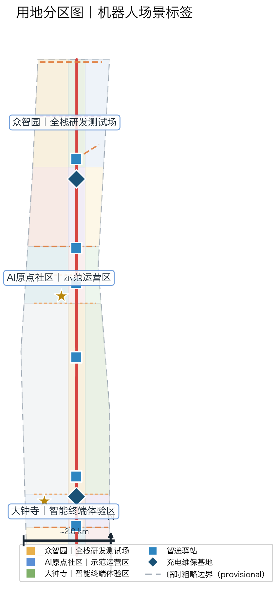
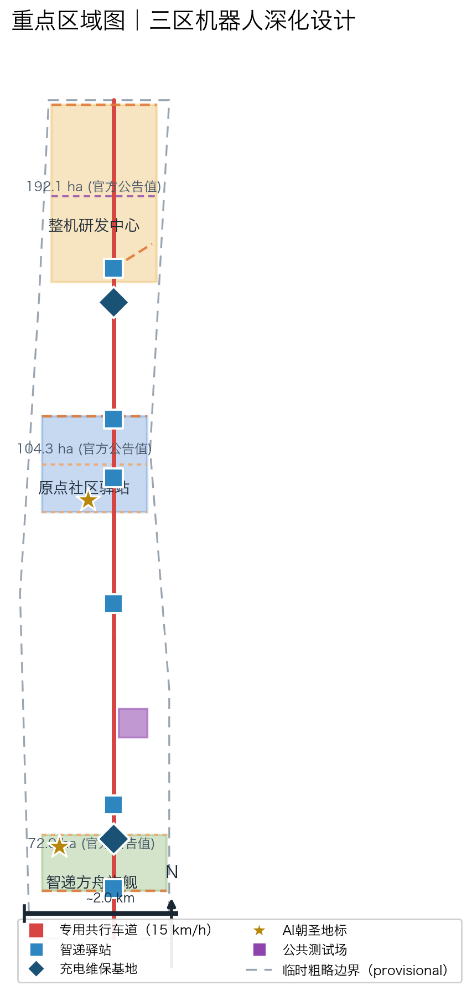
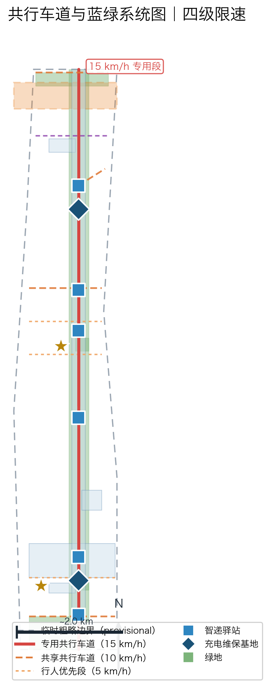

Jingzhang AI Low-Speed Robot Co-Mobility Network: A New Intelligent-City Backbone for Human-Robot Co-Mobility
Taking the slow-mobility main axis of the Jingzhang Railway Heritage Park as its backbone, this proposal introduces the overarching concept of the 'Jingzhang Smart Mobility Network · AI Low-Speed Robot Co-Mobility Belt,' and adds the 'Co-Mobility License' protocol as a signable, acceptance-testable, and exitable operational skeleton: using the four-stage BASE/BOOST/BLACKOUT/BEQUEST contracts and the G0–G4 five acceptance gates, it converts the dedicated low-speed robot lanes (15.4 km dedicated + 3.4 km shared) deployed along the Co-Mobility Main Corridor, six Smart Delivery Stations, two charging-and-maintenance bases, and four categories of low-speed robot services into the public promise of 'Deliverable, Stoppable, Retirable.' The proposal is supported by 12 AI scenario cards (including 4 test-and-verification scenarios), 8 user personas, 3 AI pilgrimage landmarks, 7 global ecosystem cases, brand visual specifications, and an operational KPI system, forming an experienceable, verifiable, and replicable conceptual scheme for a low-speed robot co-mobility network.
Jingzhang AI Low-Speed Robot Co-Mobility Network: A New Intelligent-City Backbone for Human-Robot Co-Mobility
This proposal's public promise consists of only three phrases: Deliverable, Stoppable, Retirable. "Deliverable" refers to the accessibility of last-mile delivery for communities, campuses, universities, and elderly or disabled residents; "Stoppable" refers to rule-based stopping and yielding by robots along the co-mobility lanes, stations, and plazas; "Retirable" means that under any failure, extreme weather, or public dispute, the network can be downgraded, contracted, or even shut down at a single command, leaving behind no unattended machine for which no one is responsible.
The three phrases correspond respectively to the three anchors of the proposal: "Deliverable" is guaranteed by 12 scenario cards and the App-free channel; "Stoppable" is guaranteed by the three cross-sections (dedicated / shared / pedestrian-priority) and the four-tier speed limit; "Retirable" is guaranteed by the BLACKOUT phase of the Co-Mobility License and by migratable, reversible spatial facilities. Anything beyond these promises — vehicle counts, conflict rates, profitability — is not claimed prior to on-site verification.
Non-claim declaration. This proposal has conducted no on-site survey, household interview, delivery origin-destination (OD) survey, or pedestrian-flow count; all content is conceptual-design suggestion based on public announcements, the taskbook, and open data, and does not constitute a government-approved conclusion, an implementation commitment, or a designation of any supplier Source. Indicators marked unknown in the metrics are directional placeholders to be completed once official data and professional teams deepen the work.
Design Basis and Source List
This proposal takes the "International Scheme Solicitation Prequalification Announcement for the Century-Old Jingzhang AI Innovation Belt Urban Design," issued by the Haidian Branch of the Beijing Municipal Planning and Natural Resources Commission, as its primary authoritative basis Source; it takes excerpts from the agent-oriented taskbook as a supplementary basis Source; and it takes the provisional coarse boundaries, key areas, enumerations, metrics, and source lists registered by the maintainer in brief/site-package/ as its machine-readable basis Source. The proposal focuses on the two tracks robotics-autonomous-mobility and ai-origin-community, corresponding to the two scenarios robot-delivery-low-speed and ai-traffic-walkability, redefining the Jingzhang Railway Heritage Park corridor as a "human-robot co-mobility" low-speed robot service backbone. On top of this, v2 introduces the "Co-Mobility License" protocol concept [E:ROBOT-V2-LICENSE-PROTOCOL], converging the scattered lanes, stations, speed limits, and operational mechanisms into a signable, acceptance-testable, and exitable operational skeleton.
All design judgments are decomposed into traceable sources, recalculable metrics, verifiable layers, and human-reviewable assumptions. All robot co-mobility facilities (lanes, stations, charging-and-maintenance bases) fall within nine GeoJSON layers; core metrics are recalculated under EPSG:4548 and are consistent with the union rules of scripts/spatial_review.py Depth Depth.
Four-tier source-usage table. This proposal strictly distinguishes, for each piece of material, what it "may be used for" and what it "may not be used for," to avoid mistaking inspiration for commitment, or a pilot for an approval:
| Source tier | Representative items | May be used for | May not be used for |
|---|---|---|---|
| Statutory approvals | Solicitation announcement, taskbook, official regulatory plan | Determining scope, tracks, mandatory tasks, and review criteria | Inferring implementation commitments or funding availability |
| Official built / under-construction | High-level autonomous-driving demonstration zones, pilot delivery vehicles | Mechanism translation, policy-path benchmarking | Claiming the Jingzhang corridor is already included in the pilots |
| Draft proposals and international cases | Starship, Serve, local slow-mobility initiatives | Conceptual inspiration, mechanism reference, risk identification | Proving Jingzhang is necessarily feasible or that vehicle counts are replicable |
| Open data and agent-derived products | GeoJSON, recalculated metrics, scenario cards | Internal self-consistency of spatial structure and recalculable metrics | Replacing official approval or measured operational data |
Provisional boundaries and conceptual-suggestion attributes. This package uses provisional coarse boundaries generated with geometry_role="provisional_constraint" and official_boundary=false Spatial data; this organizer-side data gap does not block content scoring, and a full recalculation is required once the official polygon is published. All lanes, speed limits, station siting, phasing, and operational mechanisms are expressed as "conceptual suggestions / reference schemes / subjects for deeper study by professional teams," and do not constitute implementation commitments. The machine-readable schema of the Co-Mobility License is found in visual/assets/co-mobility-license.schema.json, and the tabletop-exercise script in visual/assets/run_license_tabletop.js; the two only demonstrate the internal logical self-consistency of the protocol and do not prove that it has been signed by any party or authorized to operate.
Current Conditions Diagnosis and Problem Baseline
The robot co-mobility network is not a technology imagined in a vacuum, but a spatial response to three verifiable real-world problems Depth:
1. High last-mile delivery costs. Public industry data show that the urban last-mile "final kilometer" cost has long accounted for 30%–50% of total logistics cost, and the human-rider model faces sustained pressure under an aging population and rising labor costs Source. The universities, campuses, and communities along the Jingzhang corridor have high order density and regular routes, providing natural conditions for large-scale low-speed robot pilots. 2. Frequent last-mile traffic conflicts. Food-delivery riders riding against traffic, occupying lanes, and contesting right-of-way with pedestrians is a nationwide urban-governance pain point, and the core target of this proposal's "human-robot co-mobility" design. The co-mobility network separates robots from pedestrian flows with dedicated lanes, and front-loads safety design through speed-limit tiering and conflict-test fields. 3. Difficulty of parcel pickup for the elderly and mobility-impaired. Delivery of large, heavy, or pharmaceutical parcels is especially difficult over the "final 100 meters" for elderly and disabled residents; barrier-free proxy pickup and voice-based parcel retrieval are the starting point of this proposal's public-interest design Source.
The three problems respectively anchor the three promises: high cost corresponds to the efficiency proposition of "Deliverable"; traffic conflict corresponds to the safety proposition of "Stoppable"; pickup difficulty corresponds to the equity proposition of "Deliverable"; and the common precondition of all three is that the network must be "Retirable" — any pilot that cannot exit safely should not be allowed to proceed.
Honest declaration of data gaps. Official delivery OD volumes, slow-mobility pedestrian baselines, and building and ownership inventories have not been published; the corresponding metrics in this proposal are kept at status=unknown or labeled as directional estimates. The gap list is found in assumptions.json and in the Risk section.
Auditable methodology. All design judgments follow a four-step auditable chain: source registration (sources.json) → usage limitation (the four-tier source table) → spatial placement (GeoJSON layers) → metric recalculation (EPSG:4548 union). Any judgment that cannot be traced back through these four steps is not written into a formal conclusion; each contract clause of the Co-Mobility License is likewise registered along this chain, so that the "Deliverable, Stoppable, Retirable" promises can be verified clause by clause rather than remaining slogans Depth.

Three-Level Scope Framework
The proposal organizes three design levels of the robot co-mobility network according to the three-level scope defined by the announcement: the Coordinated Research Area (43.6 km² provisional scope) answers "how to organize the robot industry ecosystem and regional coordination"; the Overall Design Area (approximately 11.4 km² provisional boundary) answers "the spatial structure and facility layout of the co-mobility network"; and the Key Area Scope (368.4 hectares provisional aggregation) answers "the detailed design of robot scenarios in the three zones" Standard Source.
| Level | Design question | Proposal's answer | Data anchor | Must not claim before verification |
|---|---|---|---|---|
| Coordinated Research Area | How to organize the robot industry ecosystem and Beijing-Tianjin-Hebei coordination | "Triangular coordination" of Haidian R&D sourcing—Yizhuang policy demonstration—Shunyi operational base, supported by the seven-element ecosystem atlas | compliance_matrix.json, standard_matrix.json | Must not claim the triangular coordination is signed or funded |
| Overall Design Area | How the co-mobility network is mapped | "One Corridor, Four Branches, Six Stations, Two Bases" spatial structure; 11 co-mobility roads and 23 robot-related buildings all mapped | Spatial data, Spatial data | Must not claim lanes have right-of-way or buildings are built |
| Key Area Scope | How the three zones reach detailed-design depth | Zhongzhiyuan = full-stack R&D test field; Origin Community = demonstration operations zone; Dazhongsi = smart-terminal consumer experience | Spatial data, Metric | Must not claim the zones' regulatory plans are adjusted or tenants are in place |
Taskbook cross-reference table. The mandatory requirements of announcement sections 1.3/1.4/1.5 and agent.1–agent.6 are mapped item by item to the proposal's answer, spatial anchor, and evidence file, ensuring a closed "requirement—answer—evidence" loop Depth:
| Announcement requirement | Proposal's answer | Spatial anchor | Evidence file |
|---|---|---|---|
| 1.3 Coordinated Research Area | Triangular coordination + seven-element ecosystem atlas | Full design boundary | compliance_matrix.json |
| 1.4 Overall Design Area | One Corridor, Four Branches, Six Stations, Two Bases | roads.geojson, land_use.geojson | metrics.json |
| 1.5 Key Area Scope | Three-zone conceptual deepening | key_areas.geojson | design_depth_matrix.json |
| agent.1 Industry and future city | Ecosystem atlas + pilgrimage landmarks | land_use.geojson#LU-001 | agent_fact_pack.md |
| agent.2 Seven elements landing | Land/industry/funding/talent/compute/data/scenarios | buildings.geojson | compliance_matrix.json |
| agent.3 Overall structure and regulatory plan | Spatial structure + land-use zoning | land_use.geojson, roads.geojson | design_depth_matrix.json |
| agent.4 Three-zone detailed design | Zhongzhiyuan / Origin / Dazhongsi | key_areas.geojson | design_depth_matrix.json |
| agent.5 Metrics and area recalculation | EPSG:4548 union recalculation | metrics.json | metrics.json |
| agent.6 Long-term operations | Four-season events + developer community | public_space.geojson | compliance_matrix.json |
The three levels of work are not a disconnected set of drawings: the coordinated research level decides the robot industry and policy judgments; the overall design level translates those judgments into lane, station, and phasing layers; and the key-area detailed design validates human-robot co-mobility safety and operational feasibility on specific parcels. Any area, ratio, scale, or quantity that cannot be recalculated from structured data is not written into a formal conclusion Depth.
The Co-Mobility License threading through all three levels. The Co-Mobility License protocol maps simultaneously onto all three levels of scope: the coordinated level answers "who can sign, and what to sign" (operating entity and funding mechanism); the overall design level answers "where to operate, and at what speed limits" (lanes and cross-sections); and the key-area level answers "how to conduct acceptance on specific parcels" (G-gate evidence). If any one level lacks evidence, the corresponding license stage may not be claimed as passed, preventing a disconnect between structure and operations Depth.

Coordinated Research Area: Industry and Future City Research
The core task of the Coordinated Research Area is to build a world-class AI innovation ecosystem, of which the robot co-mobility network is the "perceivable, experienceable" component. Beijing already possesses the country's most complete low-speed autonomous-driving policy and industrial foundation Standard. This section performs only "mechanism translation" of global and local cases, not "success endorsement":
| Case | Mechanism translated only | Corresponding Jingzhang action | Explicitly does NOT prove |
|---|---|---|---|
| Beijing High-Level Autonomous Driving Demonstration Zone Source | Right-of-way and policy test-bed mechanism | Seeking inclusion of the co-mobility belt in the right-of-way pilot list | Does not prove the Jingzhang corridor is already in the demonstration zone |
| Meituan autonomous delivery vehicle Source | Public-road fresh-food / pharmaceutical delivery process | Station-to-community delivery link design | Does not prove Meituan will land at Jingzhang |
| Neolix low-speed unmanned vehicle Source | Pace of long-term normalized operation | Normalized operation choreography of the co-mobility lanes | Does not prove Yizhuang vehicle counts are transferable |
| JD smart express vehicle Source | Cost structure of normalized last-mile delivery | Smart Delivery Station last-mile handoff | Does not prove JD will join |
| Starship Technologies Source | Path to million-order scale in university towns | Campus delivery scenario card RB-03 | Does not prove Jingzhang can reach the same volume |
| Serve Robotics Source | Yielding strategy for sidewalk-grade delivery | Pedestrian-priority segment delivery RB-06 | Does not prove Jingzhang conflict rate is the same |
| Haidian Zhongguancun Science City (innovation-ecosystem parent body) Source | R&D sourcing and scenario-opening ecosystem | The co-mobility belt as an experienceable outlet | Does not prove this proposal is the officially adopted scheme |
Seven categories of evidence jointly indicate: low-speed robot delivery has moved from the laboratory to the street; what is lacking is not technology but the urban spatial design for co-mobility with humans and a signable operational skeleton — which is precisely the main thrust of the Co-Mobility License protocol.
Seven-element ecosystem atlas. The robot co-mobility network places the seven elements of "land, industry, funding, talent, compute, data, and scenarios" on a single spatial map: land = 18 land-use parcels (including robot test-protection green belts and strategic reserved areas); industry = the whole-machine R&D—algorithm-and-compute—terminal-application chain; funding = a conceptual suggestion of diversified sources based mainly on public-space operations and commercial partnerships; talent = robot-engineer apartments and a developer community; compute = cloud-based dispatch and compute center (BLD-003); data = compliant governance of dispatch trajectories and order data; scenarios = 12 scenario cards. The item-by-item mapping of the seven elements is found in compliance_matrix.json under the agent.2 entry.
Regional coordination. The proposal forms an innovation-coordination loop with Beicheng Community, Future Science City, Huairou Science City, the Economic-Technological Development Area (Yizhuang), and the Beijing-Tianjin-Hebei region: Yizhuang undertakes policy experimentation and scaled operation, Shunyi undertakes the logistics base, and Haidian undertakes R&D sourcing and scenario opening; the robot perception and chip technologies of Future Science City and Huairou Science City can be reverse-validated through the co-mobility network's scenarios. All coordination relationships are expressed as conceptual suggestions Source.
The boundaries and non-claims of coordination. The triangular coordination is a conceptual R&D—policy—operations division of labor and does not constitute an administrative delineation or an inter-institutional agreement; this proposal does not claim that Yizhuang, Shunyi, or Future Science City has committed to participating in the Jingzhang co-mobility network, nor that a Beijing-Tianjin-Hebei coordination mechanism has been established for this purpose. The realization of coordination awaits formal negotiation among the parties; this proposal only provides a spatial and institutional prototype Source.
Future city form. The proposal advances a "human-robot co-mobility block" paradigm: robots are not street outsiders but share with pedestrians and cyclists a single set of predictable spatial rules — dedicated lanes, stations, charging piles, and signal priority together form a "robot-accessible street-furniture system," providing a replicable cross-section prototype for AI cities worldwide.
The public-interest bottom line of the innovation ecosystem. Unlike the technical narrative of "maximizing robot operational efficiency," this proposal explicitly anchors the success criterion of ecosystem-building to the public interest: the output of R&D testing must be deposited as an open-source co-mobility rule library and simulation dataset (BEQUEST phase), rather than as closed patents; the output of demonstration operations must publish a fairness ledger and incident ledger, rather than internal KPIs. If ecosystem scale is achieved at the cost of the accessibility and safety of the weakest groups, it is not regarded as a success Source.
Overall Design Area: Urban Renewal and Regulatory-Plan-Level Urban Design
Overall concept: Jingzhang Smart Mobility Network (Jingzhang Zhi Xing Wang). Naming system: main name "Jingzhang AI Low-Speed Robot Co-Mobility Belt," abbreviated as "Jingzhang Smart Mobility Network," English "Jingzhang AI Low-Speed Robot Co-Mobility Belt (JZ CoMobility)"; three-tier sub-naming: Co-Mobility Main Corridor, Smart Delivery Station, Co-Mobility Zero Plaza. The naming reverts to the Jingzhang Railway's "self-built" spirit and the AI Origin Community's "pilgrimage site" positioning, and is extensible and internationally communicable Source.
Logo visual specification (brand recognizability). Core form: a rail arc that forks into a double line at the "ren" (人) character point (an abstraction of the Jingzhang herringbone railway), with a circular wheel-dot on the right, forming the three elements "rail × wheel × herringbone"; primary colors: Jingzhang Green #1F7A5C (the heritage-park green belt), Smart Mobility Silver-Grey #8E9BA8 (robot metallic texture), Origin Orange #E86A33 (energy and warning accent); usage rules: minimum use size 12mm/32px, safety spacing ≥ 1/4 of the main-form height, reverse to white on dark backgrounds, no gradients or strokes; extension system: a family of four functional icons (station/charging/handoff/inspection), a lane-dashed-rhythm auxiliary graphic, and a bilingual text-mark combination. The typography and graphics are original geometric compositions with no infringement risk.
Overall spatial structure: "One Corridor, Four Branches, Six Stations, Two Bases, Three-Zone Linkage." The Co-Mobility Main Corridor is deployed along the slow-mobility main axis of the Jingzhang Heritage Park Spatial data, with 15.4 km of dedicated segment + 3.4 km of shared segment totaling approximately 18.8 km of drivable lane Metric; the four branches are the northern loop, the central connector, the southern industrial connector, and two robot trunk lines (RD-009/RD-010); the six Smart Delivery Stations are distributed along the main corridor at roughly a 1.2 km service radius Metric, and the two charging-and-maintenance bases guard the north and south Metric. The 18 land-use parcels fully cover the provisional design boundary without overlap Spatial data.
Co-Mobility License four-stage contract table. The Co-Mobility License decomposes operations into four stage contracts that can be signed and exited independently, each with explicit core requirements and a "must-not-claim-before-verification" red line, with stages connected by G-gate acceptance [E:ROBOT-V2-LICENSE-PROTOCOL]:
| Stage | Core requirements | Must not claim before verification |
|---|---|---|
| BASE baseline | Reserve a non-AI service path (human counter / phone ordering), keep ordinary paths open, human contact reachable | Must not claim it is scaled or profitable |
| BOOST expansion | Bounded deployment locations, human responsible party, allowed/forbidden data lists, speed limit 3–20 km/h, algorithm filing | Must not claim conflict rate has met KPI or right-of-way is fixed |
| BLACKOUT emergency shutdown | Planned disconnection of model/network/sensor/actuator, triggering-permission roles, recoverable evidence | Must not claim zero interruption or zero loss |
| BEQUEST legacy handover | Inheritable-asset list, assets must remain usable without AI, open-source reuse package | Must not claim handover has occurred or been received by a successor |
G0–G4 five-gate acceptance table. Before advancing to the next stage license, five acceptance gates must be passed in sequence, each with passing evidence and a failure-handling procedure, to avoid "one-time approval, permanent operation":
| Gate | Core question | Passing evidence | Failure handling |
|---|---|---|---|
| G0 Spatial gate | Are right-of-way and cross-sections in place | Lane layer mapped + traffic-professional review minutes | Switch to shared mode or defer |
| G1 Single-unit gate | Basic safety of a single robot | Pass-rate record at 8 km/h in a closed test field | Downgrade speed limit and retest |
| G2 Multi-unit gate | Dispatch and multi-unit coordination | Dispatch-platform algorithm filing + simulation record | Shrink fleet size |
| G3 Co-mobility gate | Human-robot conflict rate meets standard | Measured results in conflict-test field + public satisfaction | Full-line speed reduction or test halt |
| G4 Exit gate | Failure takeover and shutdown | Remote-takeover drill latency + shutdown plan | Pause network expansion until rectified |
The renewal framework follows the principle of "no large demolition or large construction, light facilities first": the co-mobility network starts with lane striping, modular stations, and temporary charging facilities, which are migratable, reversible, and exitable; all building-scale and intensity metrics are status=unknown pending official regulatory-plan conditions Depth Depth.
The spatial safety net for "Retirable." The BLACKOUT phase of the Co-Mobility License requires that the network can, on command, disconnect models, networks, sensors, and automatic actuators, and restore ordinary paths and human services. This requirement is written front-loaded into the spatial design: all stations retain human pickup windows and phone-ordering channels; all robot lanes can instantly revert to slow-mobility corridors after shutdown; and all charging facilities can be powered down and stored. There is no point in the spatial design that "must depend on robots to function," so that "Retirable" does not depend on operator goodwill but is guaranteed by the spatial structure itself [E:ROBOT-V2-LICENSE-PROTOCOL].
Detailed Design of Key Areas
| Key zone | Design positioning | Robot spatial actions | AI-industry and operational scenarios | Evidence references |
|---|---|---|---|---|
| Zhongzhiyuan AI Independent Innovation Acceleration Zone | Full-stack robot R&D test field | Whole-machine R&D Centers A/B, cloud-based dispatch compute center, test-protection green belt, release-test plaza, charging-and-maintenance base, 8 km/h closed test track | Perception-algorithm testing, whole-machine release, standard-setting, safety evaluation | Spatial data, Depth |
| Beijing AI Origin Community | Demonstration operations zone (near-term demonstration segment) | Robot Space-time Pavilion (pilgrimage landmark 1), Co-Mobility Zero Plaza (pilgrimage landmark 3), Smart Delivery Stations, talent-apartment delivery coverage | Community delivery pilot, human-robot co-mobility experience, open-source developer community | Spatial data, Metric |
| Dazhongsi AI Industry Cluster Zone | Smart-terminal consumer experience zone | Smart Delivery Ark Station flagship (pilgrimage landmark 2), Smart Delivery Experience Plaza, terminal-industry incubator, Dazhongsi Station handoff line | Smart-terminal display, unmanned retail, express-subway handoff | Spatial data, Spatial data |
All three zones reach the conceptual-deepening depth: positioning, spatial actions, AI scenarios, implementation dependencies, and area verification are given for each; detailed-design depth is checked by the design-depth matrix Depth. If only "building a demonstration zone" is described without functional, building, transport, and implementation-project evidence, it should be regarded as incomplete — this proposal provides all corresponding layer evidence in geometry/.
Mapping of the three zones to Co-Mobility License stages. Zhongzhiyuan corresponds to the BASE stage's closed testing and single-unit safety verification (G1), and is the "safe origin" of the whole network; the Origin Community corresponds to the BOOST stage's demonstration operations and co-mobility conflict measurement (G3), and is the "publicly experienceable" window; Dazhongsi corresponds to the BEQUEST stage's terminal consumption and inheritable-asset deposition, and is the "commercially sustainable" outlet. The three zones are not launched simultaneously but are connected in sequence by the P0–P3 conditional gates; if any zone's acceptance gate fails, the network does not expand to the next zone Depth.
Implementation dependencies and reversibility. All three zones follow the spatial principle of "migratable, reversible, exitable": stations and charging facilities are modular light structures, test tracks are striping + temporary barriers, and no existing building demolition or irreversible municipal works are involved. All robot facilities within the zones are overlaid on the existing park slow-mobility system, and the site can be restored to its original state after exit, in compliance with heritage-park protection requirements Spatial data.

AI Innovation Ecosystem, Personas, and AI+ Scenarios
Ecosystem case evidence (7 items: 6 global cases + 1 local ecosystem parent body). The case list and the "translate mechanism only, do not endorse success" stance are found in the case table in the Coordinated Research section. The seven elements of the ecosystem atlas (land/industry/funding/talent/compute/data/scenarios) are mapped element by element to co-mobility scenarios, in tabular form in compliance_matrix.json under the agent.2 entry Source.
User personas (8 categories, including 4 vulnerable groups). Each persona is paired with a "non-AI alternative path" and an appeal channel to safeguard the public interest Source:
| Persona | Typical needs | Spatial response | Non-AI alternative path |
|---|---|---|---|
| Young AI engineer | Time-saving pickup, late-night overtime meals | Apartment and campus stations, late-night handoff | Human delivery window retained |
| Campus enterprise administration | Internal documents, office supplies | Intra-campus document robot line | Human mailroom retained |
| University student | Campus parcels, textbooks | Campus station and dormitory handoff | Human parcel point retained |
| Elderly resident | Pharmaceuticals, heavy items, voice pickup | Voice pickup channel, human proxy receipt | Community-volunteer proxy point |
| Disabled person | Barrier-free pickup, proxy delivery and errands | Barrier-free delivery channel, station ramps | Door-to-door human service appointment |
| Children and parents | Safe passage, school commute handoff | Pedestrian-priority segments, 5 km/h speed limit | Parent school-crossing guard retained |
| Low-digital-skill resident | App-independent pickup | Phone/voice ordering, station human window | Full human-service window |
| Delivery rider (transitioning) | Career transition, skill upgrading | Remote safety-operator and O&M training positions | Traditional delivery positions retained |
12 AI scenario cards (including 4 ★ test-and-verification scenarios). The scenario cards cover four robot categories — delivery, guiding, inspection, and cleaning; the machine-readable full text is in visual/assets/scenario-cards.json (12 cards, each containing 15 fields: scenario number, bilingual title, key zone, station, service category, public purpose, users, RACI, SLA, cost tier, data retention, non-AI equivalent path, shutdown conditions, success metrics, and stage) Source. The Co-Mobility License tabletop script run_license_tabletop.js correctly classifies all 84 cases from the 12 cards × 7 rule branches (84/84), but this only proves the contract logic is closed; field performance remains null with status not_authorized_not_run.
| Card no. | Scenario | Service target | Spatial carrier | Required data | Data legality boundary | Model role | Public value | Operational responsibility and exit mechanism |
|---|---|---|---|---|---|---|---|---|
| RB-01 | Smart delivery to home | Community residents | Six stations + community roads | Order address, station locker | Minimized collection, aggregate statistics | Route planning and locker dispatch | Reduces last-mile cost and vehicle count | Station operator; volume below target for two consecutive quarters triggers adjustment |
| RB-02 | Pharmaceutical dedicated delivery | Elderly and chronically ill residents | Pharmacy-station-community | Prescription external delivery demand | Health data must not be collected; fulfillment only | Priority dispatch and temperature control | Ensures medication access | Pharmacy joint operation; temperature-control anomaly triggers halt |
| RB-03 | Campus unmanned delivery | University students | Campus station + intra-campus roads | Campus road network and class schedule | Authorized intra-campus data only | Yielding strategy and pedestrian-flow prediction | Reduces campus e-bike hazards | School review; safety incident triggers halt |
| RB-04 | Park auto-guided tour | Visitors and residents | Five segments of co-mobility green corridor | Attraction coordinates, pedestrian flow | No personal trajectory collected | Multilingual guide and obstacle avoidance | Enhances park accessibility experience | Park manager; complaints above threshold trigger adjustment |
| RB-05 | Nighttime safety inspection | Campus and community | Inspection green belt + campus roads | Video and equipment status | Regionalized, desensitized, archived for audit | Anomaly identification and alerting | Supplements nighttime security | Security joint duty; false-alarm rate over standard triggers calibration |
| RB-06 | Barrier-free proxy pickup | Disabled and elderly residents | Barrier-free channel + station | Appointment demand list | Fulfillment information only | Demand matching and dispatch | Eliminates the final-100-meter barrier | Community joint operation; satisfaction below target triggers optimization |
| RB-07 | Enterprise campus internal documents | Campus enterprises | Intra-campus document line | Internal dispatch information | Enterprise intranet isolated | Batch route optimization | Reduces administrative time | Campus property management; cost over standard triggers contraction |
| RB-08 | Express-subway handoff | Commuters | Dazhongsi Station handoff line | Station passenger flow and lockers | Aggregate-level passenger-flow data | Off-peak handoff dispatch | Relieves station-area parking | Rail-and-logistics joint operation; peak conflict triggers time shift |
| ★RB-09 | Human-robot co-mobility conflict-test field | Test fleet and public | Low-speed robot public test field | Simulation and measured conflict samples | Public test protocol + informed consent | Conflict-probability prediction and yielding verification | Front-loads safety validation | Joint laboratory; conflict rate without downgrade triggers test halt |
| ★RB-10 | Nighttime and rain/snow safety verification | Operator and regulator | Demonstration-segment roads | Weather and sensor data | Desensitized test data | Adverse-condition reliability assessment | Delineates safe operation window | Third-party evaluation; below threshold triggers operation restriction |
| ★RB-11 | Barrier-free delivery full-process verification | Disabled and elderly groups | Full barrier-free channel | Full-process measured record | User consent and privacy masking | Full-process usability metrics | Validates the inclusivity commitment | Accessibility organization participates in acceptance; failure triggers retrofit |
| ★RB-12 | Remote-takeover emergency drill | Safety operators and operator | Dispatch center + full network | Drill scripts and takeover records | Drill data isolated and archived | Takeover-link latency assessment | Bottom-line safety capability | Periodic drills; latency over standard triggers network-expansion pause |
Privacy and human-review boundaries. All scenarios follow the principles of data minimization, open sources, explainability, and human review: robots only perform auxiliary functions such as navigation, delivery, and inspection alerting, and do not make diagnosis, approval, or law-enforcement decisions; dispatch algorithms comply with the generative-AI service management requirements Source; scenario cards do not designate any supplier as a necessary condition.
Governance roles and one-vote veto (RACI). The issuance, suspension, and retirement of the Co-Mobility License are shared among 10 proposed roles, registered role by role in visual/assets/governance-raci.json: the Accountability Lead bears ultimate accountability; the Public Oversight Representative represents affected groups in reviewing pilot entry and exit and holds a one-vote veto; the Safety Officer is responsible for emergency-stop triggering and the incident ledger; the Data Compliance Officer is responsible for the allowed/forbidden data boundary. All roles have status proposed_role_not_current_authority, meaning this proposal only puts forward role design and does not claim that any institution has been established or authorized Source. The one-vote veto of the Public Oversight Representative is the bottom line of the "Retirable" promise in the governance structure: any pilot that cannot demonstrate it is harmless to the weakest groups can be vetoed and may not proceed.
Land Use, Building Scale, and Retain-Renovate-Demolish Strategy
The land-use plan is expressed as 18 complete, closed, non-overlapping land-use parcels in accordance with the territorial-spatial land-use classification guide Standard; robot semantics are expressed through the additional attribute robot_zone without modifying the code enumeration: the five segments of the Co-Mobility Green Corridor (1401), the Robot Full-Stack R&D and Test Zone (0802), the Terminal Industry Zone and Smart Delivery Commercial Zone (05), the Residential Demonstration Zone (07), the Test-Protection Green Belt (1402), and the Strategic Reserved Zone (16), etc. Spatial data. The 18 parcels fully cover the provisional design boundary with no overlap and no gaps, satisfying the coverage requirement of spatial review Metric.
The building plan distinguishes three categories: existing retention and renovation (15 of the 23 existing buildings, all reusing their original footprints with no new high-rises), newly built light stations (6 Smart Delivery Stations, conceptual height 4.5 m, modular and migratable), and newly built charging-and-maintenance bases (2 bases, conceptual height 6.0 m) Spatial data. The retain-renovate-demolish principle is "no large demolition or large construction": this proposal does not advocate the demolition of any existing building; all renovation and new construction are conceptual suggestions, and retain-renovate-demolish conclusions must await confirmation of official ownership and regulatory-plan conditions Depth.
Building-scale and intensity metrics (total building scale, floor-area ratio, building height, building density, setback lines, road red lines) have no official conditions; they are uniformly status=unknown with the backfill path explained in assumptions.json; conceptual heights serve only as form illustration Depth Depth.
Three-tier retain-renovate-demolish determination rule. Each building is judged in three tiers: retain (the 15 existing buildings, reusing original footprints, allowing only internal-function renewal), light new-build (6 stations + 2 bases, modular, migratable, conceptual height ≤ 6 m), and pending (all other buildings must await confirmation of official ownership and regulatory-plan conditions before judgment). This proposal does not proactively advocate the demolition of any building; if a subsequent regulatory plan requires setback or consolidation, a professional team must conduct a building-by-building review against the ownership inventory, and this proposal does not replace that procedure Depth.
Binding of land use to the Co-Mobility License. The robot semantics of the land-use parcels (the robot_zone attribute) are bound to the Co-Mobility License stages: the Test-Protection Green Belt and Full-Stack R&D Test Zone may be used only for closed testing in the BASE/G1 stage; the Residential Demonstration Zone and Terminal Commercial Zone may enter BOOST operation only after the G3 co-mobility gate is passed; the Strategic Reserved Zone is not to receive fixed construction before the BEQUEST stage. This binding makes "what can be done on a parcel" correspond one-to-one with "which license stage that parcel has reached," avoiding premature development Spatial data.
Transport, Rail, Municipal Infrastructure, and Public Services
Co-mobility lane system (the core transport innovation of this proposal). Three cross-sections: dedicated segment (robot lane width 2.5 m, physically separated, speed limit 15 km/h), shared segment (co-planar with slow mobility, visually separated, speed limit 10 km/h), and pedestrian-priority segment (heritage-protection scope and plaza periphery, robots travel at low speed with pedestrian flow, speed limit 5 km/h); test track speed limit 8 km/h. The four-tier speed-limit gradation and lane widths are all conceptual suggestions to be finalized by the transport authority Spatial data. The Co-Mobility Main Corridor and the Jingzhang slow-mobility main axis are overlaid, not replaced: the park slow-mobility system remains fully continuous, and robot facilities are integrated as an overlay layer Depth.
Cross-section prototypes and replicability. The three cross-sections are abstracted into a replicable "co-mobility cross-section prototype library" for deeper reuse by other cities and blocks, serving as the vehicle for this proposal's commitment to "provide replicable cross-sections for global AI cities"; prototype parameters must be finalized after traffic-professional review Depth:
| Cross-section prototype | Robot lane width | Separation method | Speed limit | Applicable scenario | Co-Mobility License stage |
|---|---|---|---|---|---|
| Dedicated segment | 2.5 m | Physical isolation + green buffer | 15 km/h | High-flow segment of main corridor | BOOST |
| Shared segment | Co-planar | Visual color band + speed bumps | 10 km/h | Campus/community connector roads | BOOST |
| Pedestrian-priority segment | Co-planar | Heritage paving continuation + flow-following | 5 km/h | Heritage-protection scope / plaza periphery | BASE |
| Test track | 2.0 m | Temporary barrier | 8 km/h | Zhongzhiyuan closed test field | BASE (G1) |
Handoff and rail coordination. The Dazhongsi Station handoff line (RD-011) uses off-peak-period dispatch to separate express-delivery flow from commuter flow, relieving non-motor-vehicle parking and lane-occupation conflicts around the station; the handoff line does not occupy the rail station's ownership scope but only sets lockers and transfer points in the public space outside the station; ownership and time-arrangement matters must be jointly confirmed with the rail operator Spatial data.
Intersections and key segments. The North 5th Ring Road overpass segment and the rail-station handoff segment are the CON-002 key design segments requiring traffic and municipal professional review Spatial data; the Dazhongsi Station handoff line (RD-011) uses off-peak dispatch to relieve station-area conflicts; all road layers are kept within the provisional submission boundary Depth.
Municipal and facility preconditions. Station power supply, charging load, communications coverage, and fire-access are preconditions for formal deepening; the two charging-and-maintenance bases and six stations are designed as "modular + migratable" to avoid one-shot large municipal works Spatial data. When pipeline, energy, or fire-protection engineering data are missing, they are uniformly listed as preconditions for formal deepening rather than as design conclusions.

Blue-Green Network, Public Space, and Urban Character
The blue-green network takes the Jingzhang Heritage Park vitality belt as its skeleton: the five segments of the Co-Mobility Green Corridor (north to south) are consistent with the green-space layer Spatial data, with a green ratio of 0.256389 and a public-space ratio of 0.209042 (EPSG:4548 union recalculation) Metric Metric. The green corridor hosts public activities of "watching, experiencing, and riding robots": the Co-Mobility Zero Plaza (PS-001) hosts a human-robot co-mobility experience ground and the Jingzhang Co-Mobility Contribution Wall (an honor-display system); the Human-Robot Co-Mobility Memory Corridor (PS-004) links the Jingzhang Railway memory and the Robot Space-Time Pavilion tour route Spatial data Depth.
Public-space component library. Four component types — station modules, charging piles, handoff platforms, and information columns — share a unified design language (silver-grey + Jingzhang Green), are combinable and migratable, and are available for professional teams to deepen and reuse. The component library corresponds to the BLACKOUT phase of the Co-Mobility License: under extreme weather or public events, components can be quickly powered down, stored, or converted to human service points, ensuring that public space remains usable when robots are shut down Depth.
Human-robot co-mobility experience route. The green corridor links three types of public experience nodes: watching robots (whole-machine demonstrations at the release-test plaza), experiencing robots (public trial rides at the Co-Mobility Zero Plaza), and riding robots (low-speed rides along the green-corridor guide segment). The route design follows the pedestrian-priority principle; robot-ride segments do not continuously cross the heritage-protection scope and are offered only in open plazas and demonstration segments, to avoid sustained interference with heritage and the slow-mobility experience Spatial data.
Urban character. Character control is divided into three categories: official control (heritage, green space, blue line, and other statutory conditions, pending official data), design suggestions (robot-facility color and material: silver-grey main body + Jingzhang Green marker band + Origin Orange safety warning), and conditions pending confirmation (building massing, interface). It is strictly forbidden to issue pseudo-precise control lines without heritage-protection or regulatory-plan basis Standard. Within the heritage-protection scope, co-mobility adopts pedestrian-priority mode with a speed no higher than 5 km/h Spatial data.
Character and recognizability. The visual system of the co-mobility network follows the principle of "restraint + recognizability": robot facilities uniformly use a silver-grey main body, with Origin Orange used only at safety-warning points, to avoid visual interference from high-saturation colors on the heritage-park green belt and historical atmosphere; the Jingzhang Green marker band carries the "this is a co-mobility facility" recognition function, allowing pedestrians to identify robot activity areas from a distance. Color and material parameters are design suggestions to be finalized after review by the heritage-protection and character authorities Standard.
Renewal Projects, Implementation Policy, and Phasing
12 reviewable conceptual project packages (JZ-01..JZ-12). Each lists location, type, entry conditions, default action upon failure, and exit conditions; all are conceptual suggestions, not implementation commitments Depth:
| No. | Project | Location | Type | Entry condition | Default action on failure | Exit condition |
|---|---|---|---|---|---|---|
| JZ-01 | Origin Community delivery demonstration segment | Origin Community | Pilot operation | Pilot demand survey, community consent | Shrink demonstration-segment scale | Two consecutive quarters below KPI triggers contraction |
| JZ-02 | Co-Mobility Main Corridor dedicated-lane striping | Park main axis | Transport facility | Traffic-professional review | Switch to shared mode | Review failure triggers switch to shared |
| JZ-03 | Six Smart Delivery Stations | Along main corridor | Modular building | Siting and ownership confirmed | Migrate to alternative points | Utilization below target triggers migration |
| JZ-04 | Two charging-and-maintenance bases | North segment / South segment | New infrastructure | Power and fire conditions | Shrink fleet size | Insufficient load triggers shrinkage |
| JZ-05 | Cloud-based dispatch digital-twin platform | Dispatch center | Digital platform | Algorithm filing and safety evaluation | Pause network expansion | Safety incident over threshold triggers network halt |
| JZ-06 | Co-mobility conflict-test field | Public test field | Test facility | Public test protocol | Halt testing and review | Conflict rate without downgrade triggers test halt |
| JZ-07 | Robot Space-Time Pavilion | Origin Community | Cultural building | Exhibition content clearance | Change exhibition and reduce-cost operation | Visitor volume below target triggers re-exhibition |
| JZ-08 | Smart Delivery Ark Station flagship | Dazhongsi | Experience building | Commercial partnership confirmed | Convert to experience exhibition | Business below expectation triggers conversion |
| JZ-09 | Co-Mobility Zero Plaza | Origin Community | Public space | Public-space permit | Adjust activity scale | Activity safety risk triggers adjustment |
| JZ-10 | Dazhongsi Station handoff line | Dazhongsi Station | Transport handoff | Rail and traffic-control coordination | Switch to time-window operation | Peak conflict triggers time-window shift |
| JZ-11 | North 5th Ring Road co-mobility overpass segment | North 5th Ring Road node | Key design segment | Traffic-municipal special review | Detour alternative plan | Review failure triggers detour |
| JZ-12 | Barrier-free delivery and voice pickup | Network-wide stations | Inclusivity service | Accessibility-organization acceptance | Re-inspection after retrofit | Acceptance failure triggers retrofit |
Conditional-gate phasing (P0–P3). Phasing does not advance on a fixed schedule but is triggered by whether the previous stage's license and acceptance gates are passed, avoiding "expansion before meeting the standard" Depth Spatial data:
The core of conditional gating is "rather slow than wrong": the entry condition for each stage is verifiable objective evidence (demand survey, professional review, algorithm filing, measured conflict rate) rather than subjective commitment. If any stage stalls, the network stays at the previous scale and is not released due to time pressure. This mechanism converts the time constraints of the solicitation cycle into the discipline of "first do it right, then do it fast," so that the co-mobility network's expansion speed is subordinate to the speed of safety and public-interest verification, not the other way around Depth.
| Stage | Trigger condition | Content | If not passed |
|---|---|---|---|
| P0 Preparation | Co-Mobility License BASE draft | Siting-ownership confirmation, pilot demand survey, accessibility-organization onboarding | Do not enter P1 |
| P1 Demonstration | G0+G1 passed | Origin Community delivery pilot, stations online, App-free channel opened | Shrink or defer |
| P2 Network | G2+G3 passed | Dazhongsi + park core segment networked, dispatch platform filed | Maintain P1 scale |
| P3 Through-connection | G4 passed | Zhongzhiyuan full-stack testing connected to full line, open-source reuse package released | Do not expand network |
Long-term operations (agent.6). Four-season event system: spring · new-product release (Zhongzhiyuan release plaza), summer · nighttime co-mobility festival (park green corridor), autumn · developer festival (Origin Community), winter · warm-delivery action (expanded elderly-pharmaceutical delivery); developer community: annual open release of the open-source co-mobility rule library and simulation dataset; scenario open days: monthly public trial rides and safety popularization; three public-experience routes: the cultural line Co-Mobility Zero Plaza → Space-Time Pavilion, the innovation line Test Field → Release Plaza, and the consumption line Station → Flagship Station; international communication: bilingual Chinese-English copy and the "world's first low-speed robot co-mobility network in a railway heritage park" narrative. All are conceptual suggestions Source.
Operating entity and funding mechanism (conceptual suggestion). The co-mobility network does not presuppose a single monopoly operator but is organized in a "public-space operator + multiple professional service providers" combination: public space and lanes are coordinated by a public operator, while specific services such as delivery, inspection, and cleaning are opened to multiple qualified enterprises, avoiding exclusivity. Funding is mainly from public-space operating revenue, commercial partnerships, and public subsidies, corresponding to the BOOST stage's "bounded deployment + human responsible party" requirement; any service provider entering must first sign a BASE-stage contract and reserve an App-free channel Source.
Fairness ledger and public incident ledger. The operator must publish two types of ledgers: first, a fairness ledger reporting delivery time, complaint rate, and barrier-free accessibility separately for each of the 10 affected groups, without using averages to mask the weakest groups; second, an incident ledger recording the time, location, cause, and handling of every boundary violation, collision, emergency stop, and human takeover, open to public and regulatory review. The two ledgers are the core source of passing evidence for the G3 co-mobility gate and the G4 exit gate Depth.
Metrics, Area Recalculation, and Compliance Matrix
Metric recalculation follows the unified design-depth requirements Depth. This section breaks down each metric into "current value — what it can show — what it cannot show," clearly distinguishing recalculable spatial metrics, Co-Mobility License tabletop metrics, and field metrics pending on-site calibration, to avoid mistaking internal self-consistency for an approval conclusion Metric:
| Metric | Current value | Can show | Cannot show |
|---|---|---|---|
| site_area_sqm | 11,412,825 | Total area within provisional boundary (EPSG:4548 union) | Not the official regulatory-plan area |
| building_footprint_area_sqm | 558,040 | Building footprint (union) | Not the total building area |
| green_ratio | 0.256389 | Green-space share (union recalculation) | Does not include off-boundary green space |
| public_space_ratio | 0.209042 | Public-space share | Does not prove public-space ownership |
| robot_lane_length_m | 18,780 | Conceptual total lane length (15.4 dedicated + 3.4 shared) | Does not prove right-of-way is obtained |
| robot_delivery_station_count | 6 | Number of Smart Delivery Stations | Does not prove siting is implemented |
| robot_charging_depot_count | 2 | Number of charging-and-maintenance bases | Does not prove power is approved |
| key_area_count | 3 | Number of key zones | Does not prove regulatory plan is adjusted |
| scenario_card_count | 12 | Number of scenario cards (including 4 test) | Does not prove scenarios are operational |
| tabletop_case_count | 84/84 | Tabletop-case classification accuracy | Does not replace measurement and authorization |
| license_contract_count | 0 | Number of signed Co-Mobility License contracts (pending operation) | Does not prove operation has started |
| field_delivery_volume | unknown | Last-mile delivery volume (pending OD survey) | Any volume target |
| field_conflict_rate | unknown | Human-robot conflict rate (pending measurement) | Any conflict-rate commitment |
| field_satisfaction | unknown | Public satisfaction (pending survey) | Any satisfaction commitment |
| far_height_density | unknown | FAR / height / density | Any control value |
Metrics are managed in three categories: the first comprises spatial metrics directly recalculable from the submitted geometry (boundary area, green ratio, public-space ratio, building footprint, lane length); the second comprises Co-Mobility License tabletop metrics (scenario-card count, tabletop-case count, signed-contract count); the third comprises field metrics requiring on-site calibration (volume, conflict rate, satisfaction, all unknown). The three categories enter metrics.json, visual/assets/license-tabletop-evidence.json, and assumptions.json respectively, to avoid mistaking operational vision for approved planning conditions Metric.
Data-gap closure path. Each unknown metric has a registered closure path: delivery volume awaits an OD survey after authorization; conflict rate awaits G3 co-mobility-gate measurement; satisfaction awaits quarterly group surveys; FAR/height/density await official regulatory-plan conditions. Until the corresponding data are backfilled, the target values of related KPIs are used only as "pass thresholds" rather than "achieved scores"; any external statement that treats an unknown as a known value is deemed a violation of this proposal's non-claim declaration Depth.
Operational KPI system (implementability evidence). Target, monitoring frequency, and exit/adjustment threshold are tabulated; KPI triggering enters the failure handling of the corresponding license:
| KPI | Target value | Monitoring frequency | Exit/adjustment threshold |
|---|---|---|---|
| Demonstration-segment daily average delivery volume | ≥ 2,000 orders/day | Monthly | Two consecutive quarters < 50% of target triggers segment contraction |
| Average delivery time | ≤ 30 minutes | Real-time + monthly | One consecutive month over standard triggers route adjustment |
| Human-robot conflict rate | ≤ 0.1 incidents per thousand km | Monthly | 3× over triggers full-line speed reduction |
| Human-intervention rate | ≤ 0.5 incidents per 10,000 orders | Real-time + monthly | 3× over triggers network-expansion pause |
| Station service-radius coverage | ≥ 80% | Quarterly | Below target triggers station addition/migration |
| Public satisfaction | ≥ 75% | Quarterly survey | Two consecutive quarters below target triggers rule change |
| Unit delivery cost | ≤ 90% of human delivery | Monthly | Over human cost triggers switch to hybrid mode |
| Vulnerable-group usage share | ≥ 10% | Quarterly | Below target triggers strengthened barrier-free retrofit |
Compliance matrix. The 23 mandatory tasks of announcement sections 1.3/1.4/1.5 and agent.1–agent.6 are mapped item by item to chapter, layer, metric, drawing, HTML, and assumption Standard; all 15 items of the design-depth matrix are complete, of which 4 note a completeness limitation of "pending official conditions," without making any false claim of completeness.
The compliance mapping also records the "evidence reproducibility" of each task: items relying on GeoJSON or metrics.json are marked recalculable; items relying on operational data or the official regulatory plan are marked unknown with a registered closure path, so that reviewers can judge item by item which is a structural fact and which is a pending placeholder Depth.

Risk, Copyright, and Compliance
Public interest and App-free service bottom line. This proposal takes an explicitly non-neutral stance: it prioritizes the barrier-free pickup rights and safe-passage rights of the elderly, disabled, children, and low-digital-skill groups over maximizing robot operational efficiency. All co-mobility services must retain App-independent pickup and appeal channels — station human windows, phone/voice ordering, and community-volunteer proxy receipt — ensuring that any resident without an account, device, or digital skill can still obtain the same core services. Robot dispatch makes no diagnosis, approval, or law-enforcement decisions and performs only auxiliary functions; differences in experience across groups are reported publicly, without using averages to mask the weakest groups' experience. The baselines of all 10 affected groups are declared unknown; an item-by-item audit is found in visual/assets/public-interest-audit.json Source.
Risk in six dimensions (risk.json). Data and privacy (score 3: minimized collection, fulfillment-limited, forbidden for commercial recommendation); public acceptance and safety perception (score 4: staged speed limits, publicity and education, public incident ledger); technology maturity (score 3: limited weather windows, redundant takeover, human backup); policy and regulatory uncertainty (score 4: benchmarking Beijing's intelligent-connected-vehicle policy-pioneer-zone practice, submitted only as a conceptual suggestion); operating cost (score 3: modular cost reduction, quarterly review); and spatial-ownership dispute (score 3: migratable facilities, joint confirmation). All score-≥-3 dimensions are accompanied by a human_review human-review arrangement Depth.
Correspondence of risk to license stages. The six risk dimensions are each closed out on different stages of the Co-Mobility License: data and privacy are constrained by the allowed/forbidden data lists of the BOOST stage; public acceptance and safety are constrained by the G3 co-mobility gate and the public incident ledger; technology maturity is constrained by the G1/G2 test gates; policy/regulatory uncertainty is constrained by the BASE-stage "conceptual suggestion only" red line; operating cost is constrained by the KPI exit thresholds; and spatial ownership is constrained by migratable facilities and joint confirmation. Risk is not "eliminated" all at once but is re-reviewed against the corresponding G gate at each license stage; failure means no stage advancement Depth.
Compliance boundaries. This proposal does not constitute any government-approved conclusion or implementation commitment, and does not represent official endorsement of any lane, station, speed limit, or operational arrangement; all spatial-implementation content is a conceptual suggestion for professional teams to deepen Source. Robot dispatch and AI interaction comply with the generative-AI service management requirements (algorithm filing, content labeling, human review, complaint channels) Source; the co-mobility lanes do not encroach on barrier-free passage space, consistent with the spirit of the Law on the Building of a Barrier-Free Environment. The proposal contains no personal-privacy, classified, or non-public spatial data, and forges no official endorsement; the volume of real personal data used in the Co-Mobility License tabletop is 0.
Copyright ledger. All text, geometry, drawings, PDFs, and HTML are originally generated by this agent or quoted based on public materials; fonts use free-for-commercial-use Chinese fonts; case citations are all annotated with source and "background reference" attributes; an item-by-item asset-rights ledger is found in report/copyright_statement.md. The HTML pages load no remote scripts, tiles, fonts, or APIs, and do not track reviewer behavior.
Reproducibility statement. All machine-readable assets of this proposal (GeoJSON, metrics.json, Co-Mobility License contracts, tabletop scripts, scenario cards) can be reproduced locally without network access and without collecting personal data: run_license_tabletop.js --check outputs 84/84 cases passing, with real personal-data usage of 0. The reproduction result only proves internal logical closure and does not constitute any assertion about on-site safety, compliance, or authorization Depth.
References
1. brief/public-brief.md (overall outline of the public taskbook) 2. brief/site-package/design_brief.json (submission policy and boundary rules) 3. brief/site-package/agent_taskbook.json (agent.1–agent.6 tasks) 4. brief/site-package/geometry/provisional_boundaries.geojson (provisional boundary) 5. brief/site-package/enums/ (enumerations) 6. data/source_registry.json (source-usage registration) 7. data/processed/agent_fact_pack.md (fact-navigation pack) 8. visual/assets/co-mobility-license.schema.json (Co-Mobility License contract schema) 9. visual/assets/co-mobility-contracts.json (Co-Mobility License 12-card synthesized contract) 10. visual/assets/run_license_tabletop.js (tabletop-exercise script, 84/84 cases) 11. visual/assets/scenario-cards.json (full text of the 12 scenario cards) 12. visual/assets/public-interest-audit.json (public-interest audit of 10 groups) 13. Complete machine index found in sources.json, metrics.json, compliance_matrix.json, standard_matrix.json, design_depth_matrix.json, and risk.json Source